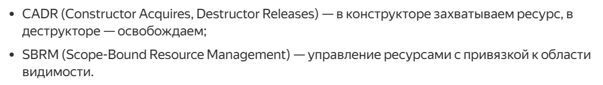

RAII и реализация учебного класса строки
Теория, примеры и иллюстрации по теме.
Идиома RAII
Идиома RAII (Resource Acquisition Is Initialization) переводится как «захват ресурса должен быть инициализацией объекта». Пусть программе требуется какой-то ресурс (память, файл), который надо обязательно «вернуть», когда он будет уже не нужен. Идея состоит в том, что лучше всего запрашивать этот ресурс в конструкторе некоторого объекта, а освобождать — в деструкторе. На этой идее построены стандартные контейнеры и так называемые «умные указатели» — классы unique_ptr и shared_ptr из стандартной библиотеки.

- Обеспечивает инкапсуляцию ресурса и инвариант состояния
- Захват ресурса есть его инициализация
- к указателям, мьютексам, файлам При использовании ресурса обеспечьте его освобождение по завершении работы. RAII связывает освобождение со временем жизни владельца.
Свой мини класс стринг
#include <iostream>
#include <cstring>
class MyString {
private:
char* str;
public:
MyString() {
str = nullptr;
}
MyString(char* str) {
int len = strlen(str);
this->str = new char[len];
for (int i = 0; i < len; i++) {
this->str[i] = str[i];
}
this->str[len] = '\0';
}
~MyString() {
delete[] this->str;
}
void Print() {
std::cout << str << '\n';
}
};
int main() {
MyString str("Hello");
str.Print();
}